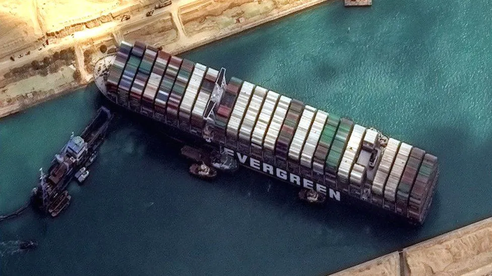

What is a container ship?
Maritime trade is the interaction between humans and exchange of goods overseas. Maritime trade is mostly associated with container ships, the innovation that single handedly changed the world. It is undeniable that the invention has brought many good things for us, but do the cons outweigh the pros?
Pros

-
Container ships are by far the cheapest and most effective method of transporting goods.
-
The use of container ships has allowed all countries to contribute to the global economy. In fact, developing countries make up a large portion of the internation trade network thanks to container ships.
-
Maritime trade as a result of container ships has encouraged economic development in regions where trade is liberalized.
-
Theft and piracy is heavily reduced since shipping containers are sealed shut at almost all times.
-
Operating container ships was much safer than other transportation methods, such as steamboats.
-
The container ship has accelerated globalization and increased QOL worldwide by making resources more accessible to everyone.
Cons
-
Almost all of society is completely dependent on maritime trade. This especially became evident when in 2021 a container ship ran aground in the Suez Canal and disrupted global trade for almost a week.
-
Container ships carry an enormous carbon footprint on par with that of the commercial planes. Ships use a fuel called bunker fuel, which is a thick sludge that requires it to be heated in order to be pumped. The noxious chemicals produced from heating the fuel poses a hazard to humans and the environment.
-
The semi-automation of unloading and loading cargo has taken away jobs in the maritime and shipping industry.